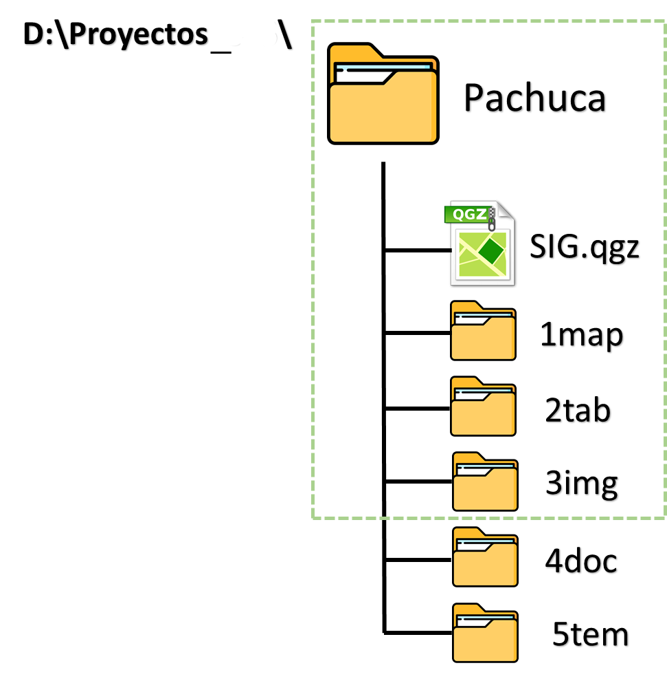

Antes de iniciar, es importante organizar correctamente tu área de trabajo, especialmente si el proyecto será utilizado por otra persona o si trabajarás con varios proyectos al mismo tiempo.
Un proyecto organizado puede abrirse sin problemas en cualquier computadora.
Un proyecto SIG incluye diferentes tipos de información, como:
Capas vectoriales (shapefiles).
Listados de coordenadas.
Imágenes satelitales.
Fotografías.
Estudios previos.
Informes finales.

Estructura básica de un proyecto SIG
Si mueves archivos fuera de su carpeta original, el proyecto puede dejar de funcionar correctamente.